Quantifying emergent phenotypic and genotypic diversity in an open-ended substrate
1Department of Computer Science and Communication, Østfold University of Applied Sciences, Halden, Norway 2Department of Dentistry and Oral Health, Aarhus University, Aarhus, Denmark 3Department of Computer Science, Oslo Metropolitan University, Oslo, Norway
Most neural cellular automata train a single update rule and share it across every cell. This substrate does the opposite: each pixel owns its own small network, and the only way to stay alive is to copy a living neighbour's.
The grid is W × H with two depth channels. The first is an alpha channel that says whether a cell is alive; the second holds hidden “chemistry”. Every pixel additionally owns an agent — a two-layer network that reads the depth-wise Moore neighbourhood and emits the cell's next state. A cell is alive only if it has both an above-threshold alpha value and a non-empty agent; an alpha value on its own cannot bring a cell to life, and an agent left in a cell whose alpha has fallen is zeroed along with the state.
A small fraction of founder cells is seeded uniformly at random and given Xavier-initialised weights. Everything else starts empty. Nothing is trained: there is no objective, no gradient and no fitness function. The only selective filter is viability — a genome whose output falls below the alpha threshold deletes its own cell.
Phenotype is never mutated directly. Cell states are produced entirely by the agents, so every observable change is a read-out of a change in the weights.
The lineage runs discrete → continuous → neural, and the step that matters here is the last one. A discrete rule table has no notion of a small change, so mutating the rule is potentially catastrophic and inheritance cannot proceed in graded steps. A continuous automaton does admit graded perturbations, but its kernel is shared, so one perturbation displaces every cell at once. A neural, per-cell rule is the first point in that progression at which a perturbation can be graded and local at the same time — which is exactly what lets one lineage drift while its neighbours do not.
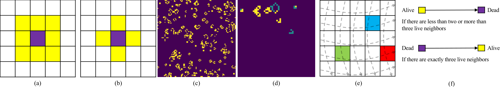
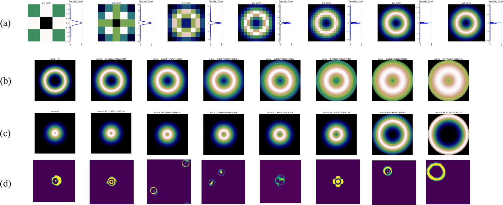
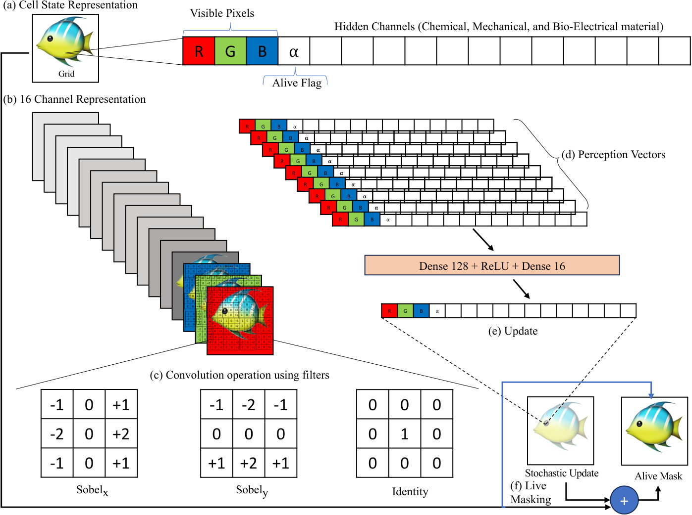
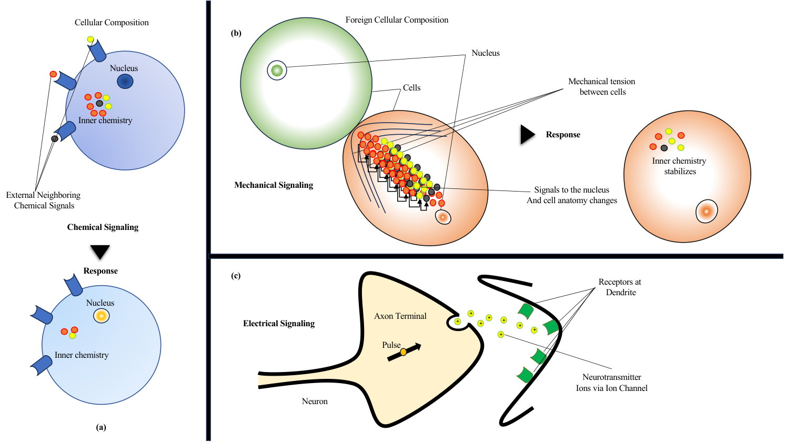
The input is the flattened depth-wise neighbourhood: 3 × 3 positions × 2 channels = 18 values. A hidden width of 2 and an output of 2 gives 44 parameters — 36 + 2 weights and biases in the first layer, 4 + 2 in the second. Only the 40 weights mutate; the biases are left untouched. Two hidden units is a deliberate lower bound rather than a tuned choice: it is the smallest layer that still admits a non-linear, non-separable map, so any structure that appears cannot be attributed to spare capacity. Capacity is also expensive here — a 200 × 200 grid holds 40,000 independent agents, about 1.8 million parameters, each deep-copied and mutated across 1000 generations and five folds.
Moore neighbourhood at (i, j)
Boundaries wrap, so the centre cell counts as one of its own neighbours.
Alive.
The agent returns an above-threshold alpha, so the cell survives into the next generation carrying this state.
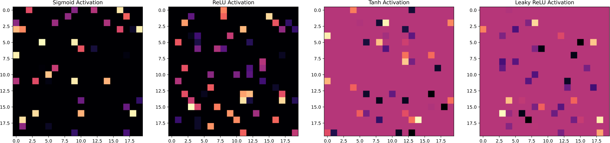
One generation is a single scan over every cell. Four things can happen to a cell, and which one happens decides whether its lineage continues.
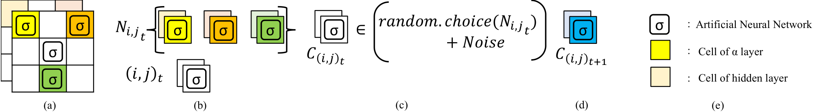
A cell with no living neighbour cannot be reached by inheritance, so it is cleared outright — state and weights together.
One detail of the released implementation is worth stating plainly, because it is easy to miss from the four-step summary. When a cell enters the inheritance branch, the reference code checks whether the cell's own network is still all-zero. If it is — the cell was dead, and this is a birth — the neighbour's genome is copied and mutated. If the cell was already alive, the neighbour's genome is copied unchanged. Only dead cells acquire new weights. The consequence is that the mutation rate is coupled to the death rate: a substrate with no turnover produces almost no new genomes, which is exactly what the unbudgeted runs in section 6 show.
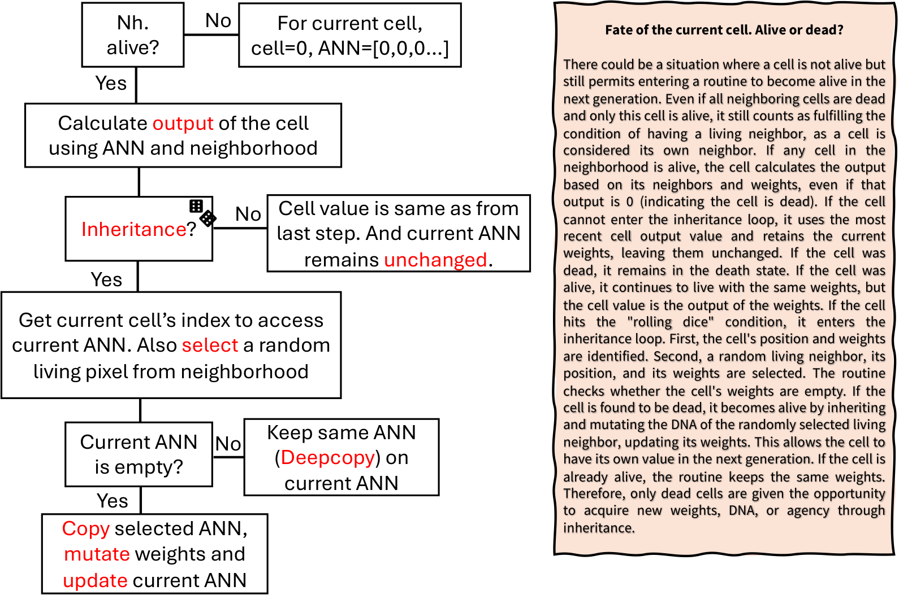
Because inheritance requires a living neighbour, living cells create a local positive feedback: if my neighbour is alive, I have a better chance of living longer. That feedback drives the growth phase. Repeated clone-and-mutate steps then let ancestor–descendant lineages drift until a descendant is, by the coarse-graining used here, a different species.
A faithful re-implementation of nca.py in this page. Same liveness gate, same birth-only mutation, same budget routine, same genotype colourings. Change a parameter and the ecosystem changes under your cursor.
The budget slider's top position is ∞: mortality off. Entropy is normalised by the alphabet the activation admits — |Σ| = 6 for sigmoid, 11 for tanh — so it is comparable across runs that share one.
What the wound tool is, and is not.
Two things this port does not reproduce, and why that is interesting.
The live substrate is a port, not a rerun: it reproduces the update rule, the thresholds, the budget routine and both genotype colourings, but it uses typed arrays instead of one PyTorch module per pixel, and its grids are smaller than the paper's 200 × 200 so a generation fits in a frame. The presets are named for what they show rather than after numbered experiments. Numbers taken from the paper appear in section 6, drawn from the published runs.
The starting patterns are this page’s, not the paper’s: nca.py always scatters its founders at random, and scatters enough of them that it does not matter that most die. A pattern built on one or two founders would usually leave an empty grid — a lone random founder dies out in most runs — so pattern founders are screened. A genome is redrawn, up to forty times, until a lone copy of it survives its first step and still has living descendants after 40 generations on a 32 × 32 scratch grid, under the settings in force. The lattice’s thirty-six founders only have to survive their first step. Nothing about the rule changes, and the wound pattern is not screened at all: it is a plain random scatter. The third row is not screened either: its genomes are fixed ones found or built for section 9, and they hold only at the ip, ppp and activation their preset sets.
All six tools are the same object: a coarse-graining φ that labels each living cell, and a functional D of the resulting label distribution. They differ only in what φ looks at and what D computes.
Phenotypic tools take φ to be the observable cell state rounded to one decimal place. Genotypic tools take φ to be a colour code of the agent's weight vector. For D the paper uses either richness — the size of the support — or normalised Shannon entropy, the q = 0 and q → 1 members of the Hill-number family, plus two dispersion statistics that summarise the same field by its spread.
“Species” here means one thing only: a label class of φ. A rounded cell-state type for phenotypic diversity, a genome colour class for genotypic diversity. There is no claim of reproductive isolation, and every count of species below is a count of occupied labels at a stated coarse-graining.
This is the paper's Table 3. It is also the argument for treating GEP as the headline phenotypic signal: it is the only phenotypic tool here that is simultaneously bounded, normalised by a fixed |Σ|, and responsive to the whole type distribution rather than to one summary statistic of it.
| Metric | Coarse-graining φ | Functional D | Range | Dominant failure mode | Recommended use |
|---|---|---|---|---|---|
| CTFP | Cell state, rounded to 0.1 | Per-label counts | 0 to Tc | Vector-valued rather than scalar; must be read visually | Tracking speciation and drift within a run |
| GEP | Cell state, rounded to 0.1 | Normalised Shannon entropy | [0, 1] | Records how evenly types are mixed, not which types they are | Headline PD signal; comparable across runs sharing an activation |
| GCVP | Cell state, rounded to 0.1 | Fraction differing from the median | [0, 1] | Saturates near unity on a full, real-valued grid regardless of true diversity | Binary substrates only; the GEP–GCVP crossing as a collapse diagnostic |
| CLOGV | Cell state, local 3 × 3 statistics | Global s.d. of local s.d. | [0, ∞) | Scale-dependent and confounded with occupancy; levels not comparable across runs | Spatial heterogeneity of local organisation within one run |
| GHC | 24-bit hash of the full genome | Richness (unique colours) | 0 to Tc | Many-to-one (≈0.1% collisions at full occupancy); measures identity, not distance | Genotypic turnover and lineage identity; read alongside occupancy |
| RWSP | Three fixed loci mapped to (R, G, B) | Richness (unique colours) | 0 to Tc | Observes 3 of 40 loci, so systematically under-reports genotypic diversity | Control for what a sparse probe misses |
A metric the authors keep in order to discredit it.
GCVP compares every cell to the median cell. Once a grid is full and real-valued, the median rarely matches any given cell, so the measure sits near unity no matter how little diversity is actually present. In the published runs it reaches exactly 1.000 at generation 1000 in the four unbudgeted sigmoid configurations (17, 19, 21, 23) — while GEP in the same runs reads 0.72 to 0.75. The paper keeps GCVP rather than dropping it because it is inherited from the CA literature and is still applied to real-valued grids in practice, so documenting the failure explicitly is more useful than a silent omission.
Agent genomes are standardised, clustered with k-means and projected with PCA; clusters stand in for species, and area and stacked-bar variants give prototype speciation plots. It is reported as complementary rather than as a headline metric. Two caveats travel with it: k is fixed for visualisation rather than chosen by a stability or model-selection criterion, and no stability analysis of the k-means solution was carried out. Cluster counts must not be read as estimates of a number of species. CNWA is used only to show that the genome cloud is not structureless and that its structure changes over generations.
Prior work visualises a few random gene values directly as an RGB triple. An RGB encoding admits three, so three is exactly the practice under test — and three of forty turns out to be far too few.
GHC hashes an agent's entire weight vector to 24 bits and splits it into an (R, G, B) triple. RWSP fixes three weight indices for the whole run and colours each cell by those three values only — a genetic microscope pointed at three loci. Because the fixed loci are rarely the mutated ones, RWSP tends toward large single-colour colonies while GHC reflects the real turnover.
The asymmetry is quantifiable rather than incidental. A single inheritance event perturbs at least one probed locus with probability 1 − (1 − ppp)3, against 1 − (1 − ppp)40 for the whole genome.
At the long runs' setting, ppp = 0.02, the two probabilities are 55.4% and 5.9% — a ratio of roughly nine to one, and the origin of the persistent gap between the two unique-colour curves below. At ppp = 0.80 they become effectively 100% and 99.2%, which is why the curves converge only at very high perturbation.
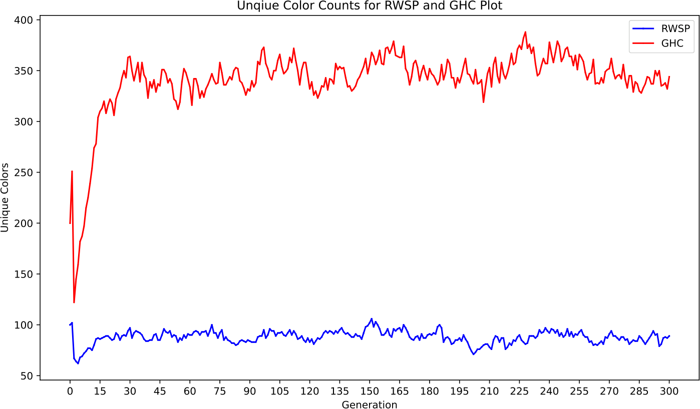
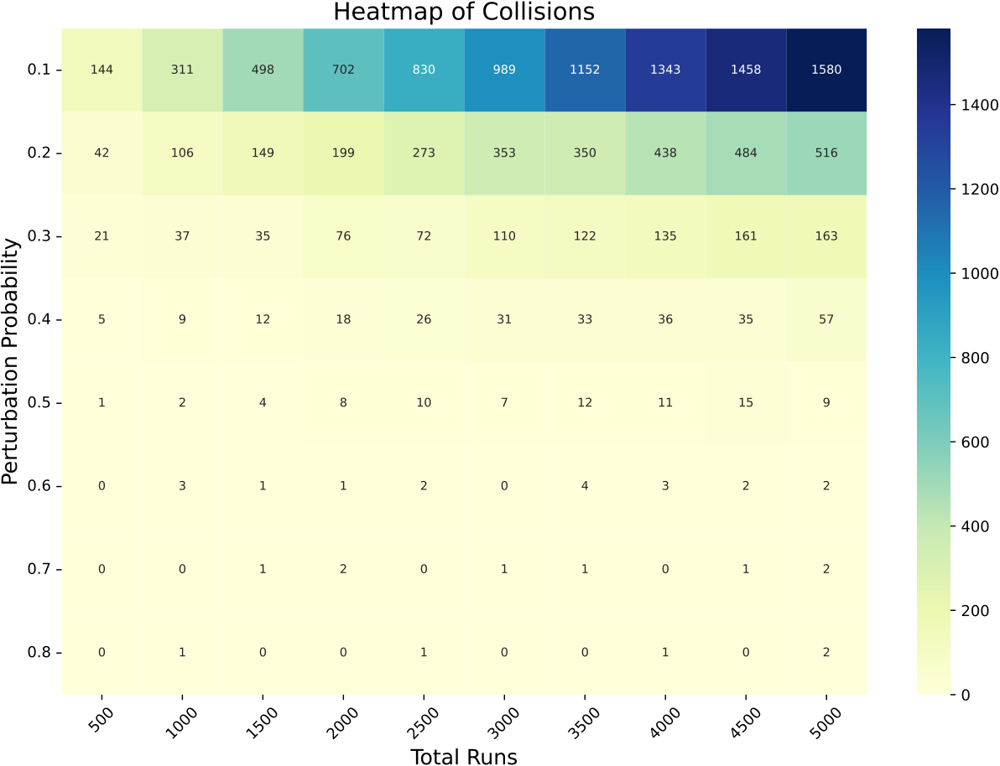
Two different questions sit behind that figure. The empirical test measures how often a genome and its own mutated descendant hash to the same colour — that is what decides whether GHC can see a mutation at all.
The combinatorial bound measures how often two unrelated genomes coincide, which is what decides whether the unique-colour count under-reports the population. With 224 = 16,777,216 colours, the expected number of colliding pairs among N living agents is about N2/225. At full occupancy of a 200 × 200 grid, N = 40,000 gives roughly 48 colliding pairs — about 0.12% of agents. On the 50 × 50 small runs it is 0.19 pairs. Both are two orders of magnitude below the GHC–RWSP gaps.
1680 small runs at 50 × 50 over 300 generations mapped the parameter space. Twenty-four configurations were then taken to 200 × 200 for 1000 generations, each executed five-fold.
The long-run design is a factorial grid in two blocks. Experiments 1–16 form a complete 2 × 2 × 2 × 2 over init_prob ∈ {0.02, 0.08}, ip ∈ {0.10, 0.50}, b ∈ {4, 8} and activation. Experiments 17–24 form a complete 2 × 2 × 2 over init_prob, ip ∈ {0.05, 0.10} and activation, with mortality removed. The mutation rate is held at ppp = 0.02 in every long run, so the effects of occupancy, inheritance and mortality can be separated from the effect of mutation.
Curves are recovered from the vector plots published with the paper, resampled onto a common 5-generation grid. As a check on the recovery: every run starts with a GHC count equal to init_prob × 40,000, which is the founder count by construction — 800 cells at init_prob = 0.02 and 3,200 at 0.08.
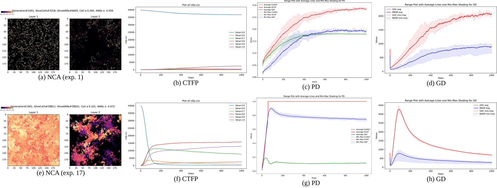
The robustness claim is stated operationally. A configuration is persistent if the living-cell count stays strictly positive in all five folds for all 1000 generations, and self-maintaining if that count also stays within a bounded band after the initial growth transient instead of drifting to zero or to saturation. Twenty of the 24 long configurations are persistent, and the persistent ones are self-maintaining in this sense. The claim applies to those twenty and not to the substrate at every parameter setting.
The four exceptions — experiments 9, 10, 13 and 14 — all combine ip = 0.50 with b = 4, and die within the first few tens of generations. The two settings pull in opposite directions on the same quantity. A budget of 4 forces every cell to die after four generations, so the population survives only if each cell seeds a viable neighbour inside that window; ip = 0.50 means a living cell replaces its own working genome roughly every other generation, so a genome that does clear the threshold is unlikely to be kept long enough to do the seeding. That it is the combination that matters is visible in the table: the same ip = 0.50 with b = 8 survives (11, 12, 15, 16), and the same b = 4 with ip = 0.10 also survives (1, 2, 5, 6), in both activations and at both founder densities.
Long configurations that are persistent and self-maintaining across all five folds and all 1000 generations.
The finest resolution five folds allow. Complete separation of ten fold values is the most extreme outcome a two-sided Mann–Whitney U test has available, and equals 2/252.
Parameters alive at once on a full 200 × 200 grid — 40,000 independent agents of 44 weights each, deep-copied and mutated every generation.
Non-overlapping min–max envelopes in the charts above therefore already indicate separation at p ≈ 0.0079, and no pair of configurations in this study can be resolved more finely than that without additional folds.
Drive phenotypic diversity up and genotypic diversity collapses. Drive genotypic diversity up and the phenotype collapses to a single dominant type. One parameter sets where on that frontier a run lands.
At low ppp many types coexist in CTFP but few unique genomes appear in the genotypic count. At high ppp many unique genomes appear but the phenotype collapses onto one type. This mirrors the resource-allocation trade-off reported for bacteria, where investing in fast growth — few, specialised genes — sacrifices trait flexibility and the other way round.
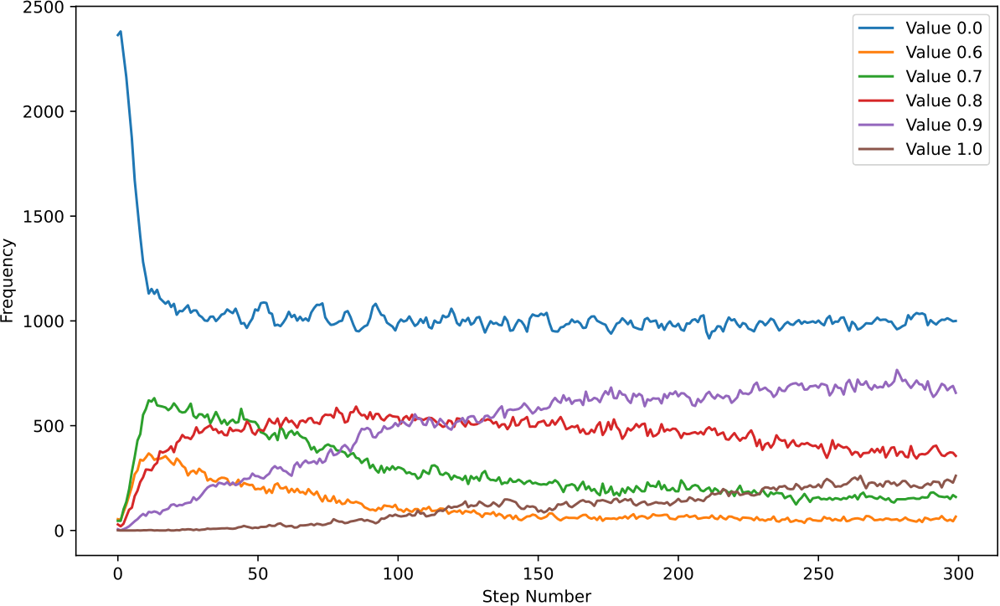
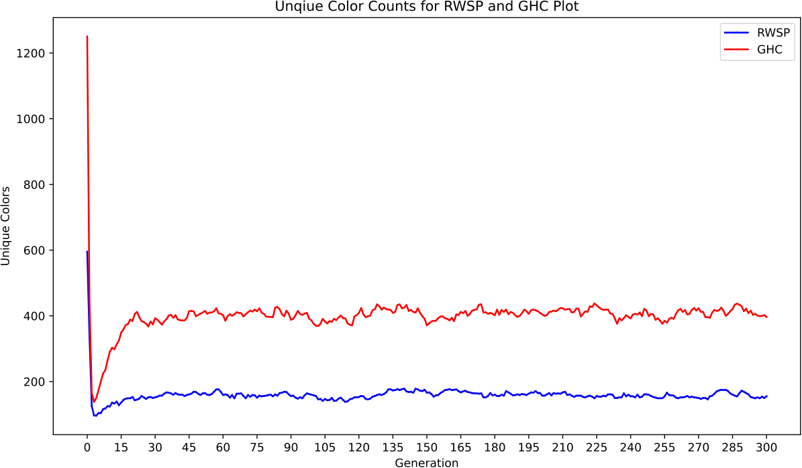
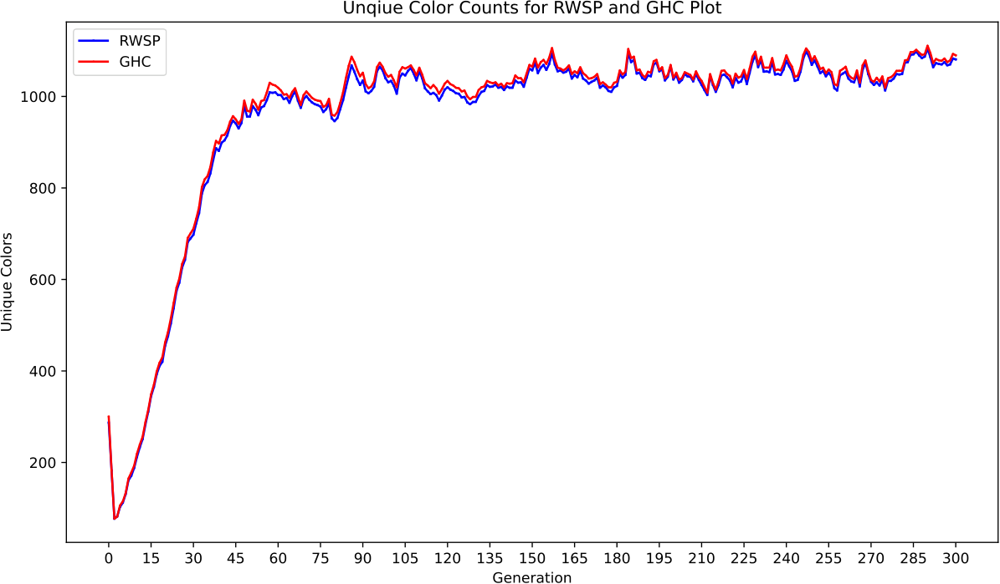
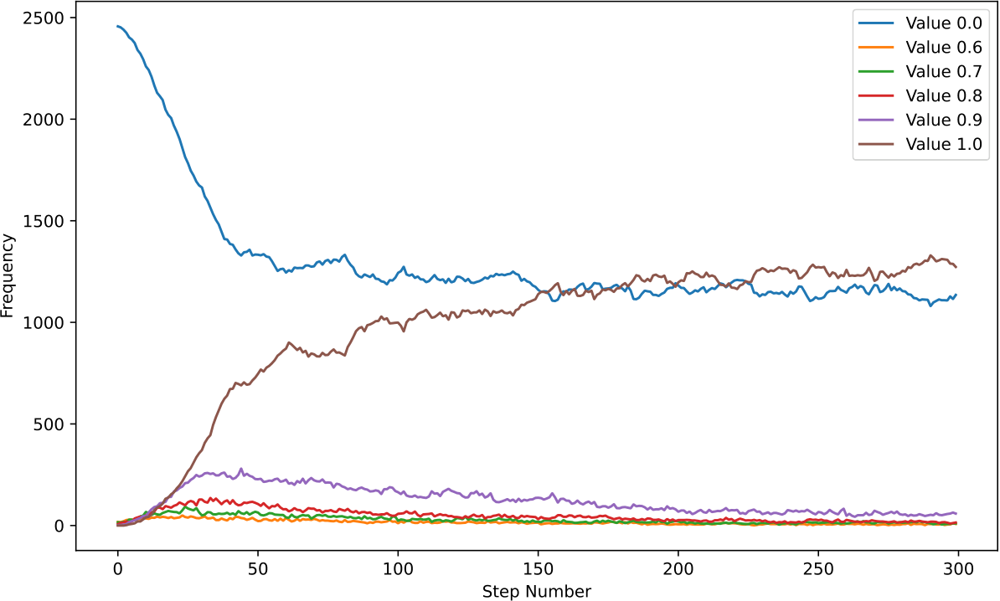
The most plausible mechanism is saturation of the agent nonlinearity, and it follows from the update rule rather than from any tuning. Mutation is additive and never reset, so a weight travelling down a lineage accumulates perturbations at a rate proportional to ppp × ip, each drawn uniformly on [−1, 1] and hence of variance 1/3. The weight vector performs an unbiased random walk whose variance grows linearly in the number of inheritance events. A hidden unit sums 18 such weights against neighbourhood values, so for unit-scale inputs its pre-activation standard deviation grows like √(6 · ppp · ip · g) after g generations.
1333
Saturated units emit states at the extremes of the output range, and those extremes round into a single CTFP bin. The phenotype collapses onto one dominant type while the underlying weight vectors keep diverging — which is exactly what the genotypic count reports. Viability selection sharpens the effect: a lineage that saturates below the alpha threshold removes its own cells, so the survivors are the ones saturating on the live side of the threshold. At low ppp the converse holds. Weights stay in the near-linear regime, small genotypic differences map to different rounded states and several types coexist, while few genomes drift far enough for the hash to register novelty.
This is an account, not a measurement.
The saturation argument is consistent with the observations but was not instrumented. The direct test — histograms of weight magnitude and of pre-activation variance as a function of ppp — is named in the paper's conclusions as future work, and no preliminary data for it is reported. Separately, the trade-off is characterised across the small-run sweep, where ppp ranges over 0.02–0.80. Because ppp is held fixed in the long runs, it is stated as a systematic tendency over that sweep rather than as a hypothesis tested at the 1000-generation scale.
Because phenotype is a read-out of genotype, two runs with identical settings can converge to the same observable colonies while carrying different lineages.
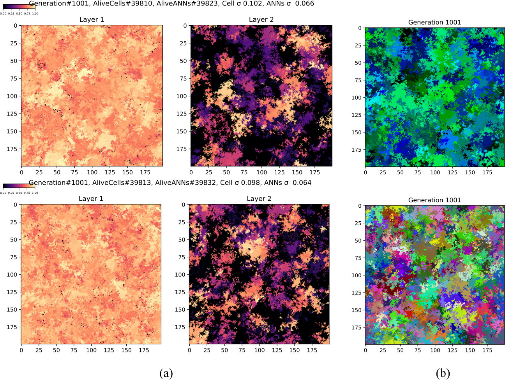
We are deliberately careful about what this shows. Two runs whose grids agree step for step are behaviourally equivalent at the resolution measured here; the two genome sets were not evaluated on any external task, so “same phenotype” means observational equivalence rather than demonstrated functional identity. The clusters below likewise arise from drift under viability selection, with no fitness function beyond liveness — which is why the lineages are described as diverging rather than as adapting, and why open-endedness is used in the descriptive sense of continuing production of novel genotypes without a fixed objective, rather than as a claim that any formal open-endedness criterion has been met.
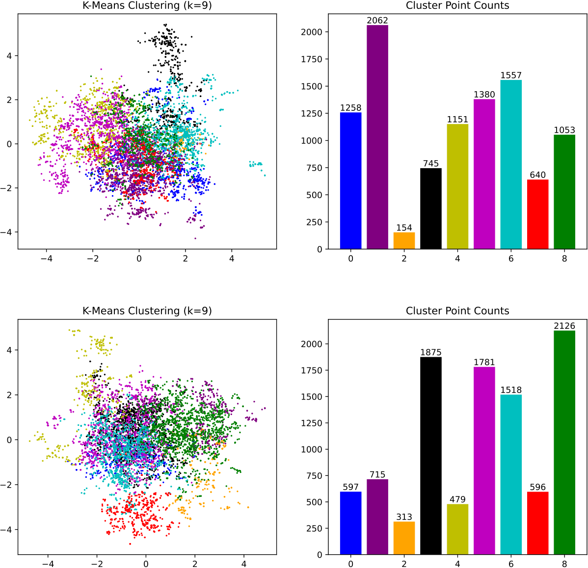
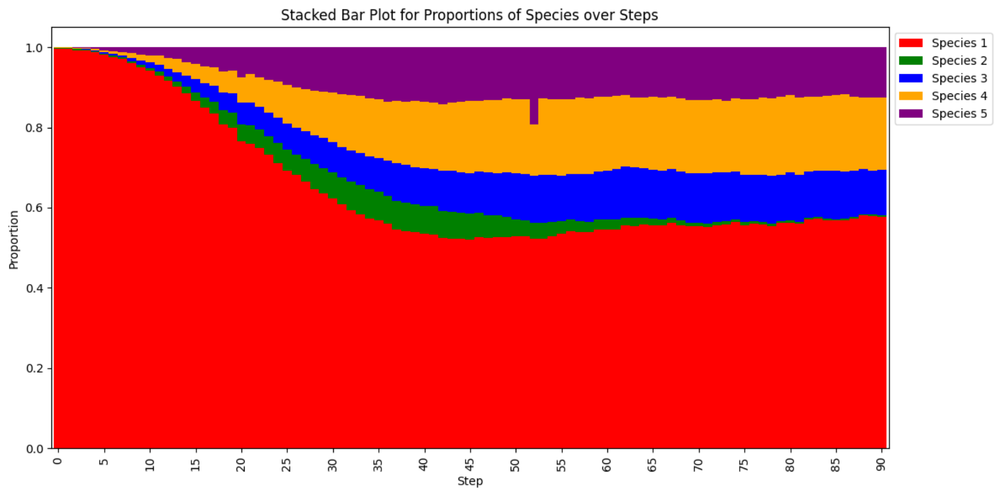
Two small demonstration runs from the repository, in all three views. These are 30 × 30 grids, chosen for legibility — the full-resolution 1000-generation animations for every long run are on the project's video channel.
Frames are sampled and palettised for the web. Click a panel to play it.
The paper measures diversity; it never asks the substrate to do anything. These seven boards do. Each takes a task that trained neural cellular automata are known for and asks how far this untrained substrate, with its 44 parameters per cell, gets on it.
“Solve” is asked at three levels, because the substrate can fail at each for a different reason.
The substrate of sections 1–3, unchanged: no objective, no training. What does it already do that bears on the task?
Keep clone-and-mutate and viability selection, but make survival depend on the task, so a cell that gets it wrong dies. Can the substrate’s own mechanism find a solution?
One genome shared by every cell — the same 44-parameter agent, biases still zero — found by an evolution strategy or built by hand. This separates what the agent cannot represent from what the substrate cannot find.
| Question | As it is | With its own adaptation | The best its agent can do |
|---|---|---|---|
| MNIST Partly |
No. Seeded on a digit, the grid loses its shape within five generations. | Only 0 vs 1, by memorising where each digit puts its ink. | 0 vs 1 on 84–91% of test digits, below ink count alone (93%); ten classes 16%, below ink count’s 22% (chance 11%). |
| Colored MNIST No |
No. | Takes the colour shortcut: 10–27% once the colours flip. | Takes the colour shortcut: 84.8% on training colours, 10.4% flipped. |
| Inpainting Partly |
Refills every wound from its rim, but restores a lineage only where it also lives outside the wound. | No, with the couplings tried. | Exact repair of four simple textures; no rule found for shapes or digits. |
| Physical dynamics Partly |
Solves no equation, but grows fronts that roughen like simple growth models. | No diffuser found. | A built genome tracks the heat equation to 10−5 after one step over a narrow range, never exactly; heat leaks away. |
| Fish, ants, bees Partly |
A renewable stock with a maximum sustainable yield, though not Schaefer’s; nothing to forage. | Settles on food but never chooses a path; no evolved tolerance of fishing. | Weights are not the limit; one genome keeps 87% of its colony on food. |
| Game of Life Partly |
No. | No: in a rule where wrong cells die, its best genomes never give birth. | Exact Life at half speed, with a designed genome that uses chemistry as a clock. |
| Lenia creatures Partly |
With mutation off, small lattice gliders from about one tanh founder in seventeen; at ip 0.1 or 0.5, none of 256 lone founders stayed localised. | No: at ip = 1 a mutant is never inherited. | Gliders, never faster than half a cell per generation; an external search finds dozens. |
Built for this page, not in the paper. Every offline number on these boards was measured with this page’s own engine code — the same app.js the boards run — over several seeds, and then re-run independently. The boards replay those results and run everything else live. Where a board changes the rule, by clamping a channel, killing cells that get a task wrong or adding food to the ground, it says so.
Partly, for the easiest pair only. Rules found by search, one shared by every cell, tell 0s from 1s on 84.4–91.4% of the 416 test digits (three runs, mean 88.9%), but counting the ink alone gets 92.8%. On digit < 5 they reach 57.2% and on ten classes 16.3%, where chance is 50.2% and 11.1%; on ten classes the ink count alone does better (22.1%).
This board borrows the set-up of Self-classifying MNIST Digits (Randazzo et al., Distill 2020), and that changes the substrate’s rule. The α channel is clamped to the digit and becomes a read-only input. A cell is alive where the pixel is above half intensity (the article uses 0.1), and the agent’s α output is thrown away. Chemistry starts at 0 and is the only thing the agents write. A cell’s vote is its chemistry bin: above or below 0.5, or one of ten bins. The digit’s answer is the majority vote of its living cells at step 30. There is no inheritance, mutation or budget while a digit is read. The article’s trained NCA is much larger: it writes 19 channels, reads the pixel as a 20th, has fewer than 25k parameters, and keeps about 95% of cells correct on ten classes.
Left alone, the substrate loses most of the digit. Seeded on a digit’s ink, the unmodified grid loses the shape within five generations. Its overlap with the digit is then 0.12 with random founders, and 0.01 with clonal founders once their budget runs out. With random founders, a read-out fitted to the grid’s state falls from 80.7% to 17.4% over 50 generations, still above the 11.1% chance. In the clamped frame, untrained rules mostly ignore the digit: 64 of 100 put every test digit in the same chemistry bin.
Searching the 40 weights of one shared agent (CMA-ES, three runs, biases kept at zero) gives rules that score 84.4–91.4% on the 416 test 0s and 1s, 88.9% on average. Always giving the commoner answer scores 51.9%. In pictures of run B, the “1” state starts at a stroke tip and floods along the stroke; the other runs spread it differently. Measured per run, a digit with a closed loop gets a “1” majority only 6–11% of the time, and one without a loop 75–94%. The chemistry does carry information: cells that vote from their own 3×3 view through a fitted lookup table, with no signalling, reach only 67.1%. But 0 vs 1 is an easy pair. A threshold on one number, the ink count, scores 92.8%, and “has a closed loop” alone scores 93.3%. Both beat every run.
The same search reaches only 57.2% (56.0–57.9%) on digit < 5 and 16.3% (11.4–19.75%) on ten classes, where chance is 50.2% and 11.1%. On digit < 5 the ink count alone gets 53.0%. On ten classes the nearest mean of the ink count gets 22.1%, above every run. For much of each digit < 5 search the rule gave every digit the same answer, and the rules kept come from isolated validation checkpoints, not from a learning curve. The local information is there: the cells’ 3×3 views, pooled by a trained linear read-out, give 72.5% on ten classes. But cells that vote from their own view through a fitted lookup table reach only 18.1%, so a rule has to pool evidence through its one chemical. The search found no agent with two hidden units and one chemical that does this. Freeing the four biases did not help (one seed: 57.5% and 17.6%). A wider agent was not tried.
The substrate’s own mechanism also handles 0 vs 1, with two more changes to the rule. First, agents persist on a fixed 28×28 field, and cells off the current digit lie dormant. Second, a task check replaces the budget: after 30 steps every living cell of the wrong class dies, and a neighbour refills the site by clone-and-mutate. Frozen at the end, the three seeds’ tissues scored 98.8%, 92.3% and 49.5% on the 416 test digits; the board runs the best of them, seed 1’s. Their scores swung during training: checkpoint medians were 83.4–96.6%, and they fell below 50% at 12 of 75 checkpoints. The same mechanism stays at chance on digit < 5 (49.8–50.0%) and near it on ten classes (9.5–17.9%). On 0 vs 1 the tissue has learned where 0s and 1s put their ink, not how they look. 266 of the 275 sites covered by at least ten test digits give the same vote on at least 95% of them. A fixed map of each site’s usual vote scores exactly the tissue’s 98.8%. Shuffle the agents and it answers “0” for every digit: 48.1%, below the 51.9% from always giving the commoner answer. On the board, the tissue map shows this template. Move a digit with the arrows and its cells’ votes follow the map, not the stroke, so a digit moved sideways is often misread. A digit you draw is out of distribution for every rule here, and the tissue needs it where MNIST puts its ink.
Sources: A. Randazzo, A. Mordvintsev, E. Niklasson, M. Levin, S. Greydanus, Self-classifying MNIST Digits, Distill, 2020 (doi:10.23915/distill.00027.002). A. Mordvintsev, E. Randazzo, E. Niklasson, M. Levin, Growing Neural Cellular Automata, Distill, 2020.
No: it takes the shortcut. Rules evolved on coloured digits answer with the colour: 84.8% on training colours, 10.4% when the colours flip. With colour removed, the same search reaches 52.4%, barely above always giving one answer (50.5%).
Colored MNIST (Arjovsky et al., 2019) labels a digit 1 if it is below 5, then flips a quarter of the labels, so a perfect reader of the digit scores 75%. Each digit is coloured so that the colour agrees with the label 80–90% of the time in training but only 10% at test. The digits here are full 28×28, where IRM uses two colour channels at 14×14, and the split is this page’s 8,000 training and 2,000 test digits. The board’s training colouring (e = 0.15) lies between IRM’s two training environments, and the flipped colouring is the test environment (e = 0.9).
The rule is modified as on the MNIST board. The α channel is clamped to the digit as a read-only input, and here it carries the colour: red ink is clamped at α = 1.0 and green at 0.6, both above the liveness threshold. The agents write only chemistry, starting from 0, with no inheritance, mutation or budget while a digit is read. The answer is the majority of the cells’ votes (chemistry above or below 0.5) at step 30. Every cell sees the colour in its own neighbourhood without any signalling, while the digit’s identity is spread over the whole shape.
The search settles on the colour by generation 10–20 in all three runs. After that, its answers match a colour-only rule on all but at most 2 of 8,000 training digits and 1 of 2,000 test digits per run. That gives 84.8% in training, 85.5% on test digits with training colours, and 10.4% on flipped colours. The board shows this directly. Swap a digit’s colour and the answer swaps with it. Run all 200 samples and the answer equals the colour on all 200, under either colouring. The clone-and-mutate version does the same: 67.5–85.5% on training colours and 10.4–26.7% flipped. In that version, as on the MNIST board, agents persist and every cell of the wrong class dies after 30 steps. Even untrained, 10 of 100 random rules already carry the colour, read through a fitted lookup.
With colour removed (all ink at α = 1.0), the same search reaches 52.4% (51.4–53.3%). Always giving one answer scores 50.5%, and a perfect reader of the digit would score 75%. The rule is nearly constant: on the board’s 200 samples it answers “≥ 5” for 183 of them. Like the digit < 5 searches, these searches sat at a constant answer for much of their time, and the rules kept come from isolated validation checkpoints.
In the IRM paper, an MLP trained by ERM scores 87.4% in training and 17.1% on the flipped test. IRM scores 66.9% on that test, and the grayscale oracle 73.0%. The substrate fails in both directions. It takes the shortcut as ERM does, and without the shortcut it has little shape signal to fall back on.
Sources: M. Arjovsky, L. Bottou, I. Gulrajani, D. Lopez-Paz, Invariant Risk Minimization, arXiv:1907.02893, 2019. A. Randazzo et al., Self-classifying MNIST Digits, Distill, 2020 (doi:10.23915/distill.00027.002).
Partly. In every run measured a cut refills from its rim, but the lineages that were there come back only in part: about half in a twelve-region mosaic, and 14% under the lab’s preset, where 60% of the cut had belonged to lineages that lived nowhere else. The only rules found that truly repair a pattern are for simple textures.
As it is, the substrate refills a wound only from its rim. A disc covering about 15% of the grid is cleared, state and genome together, with the paper’s proposed annihilation kernel, and every genome carries the label of the founder it descends from. Under the lab’s Wound and heal settings the hole is 95% re-occupied after about 80 generations. A hundred generations after the cut, 14% of the refilled cells carry their old lineage. Chance gives 1%, a fill that copies the nearest surviving lineage on the rim gives 17%, and the same disc in an uncut run keeps 40% (five seeds each). No refill of any kind could restore more than about 40%, because 60% of the cut had belonged to lineages that lived nowhere else. The nearest-rim fill is a reference, not a limit: on 3–11% of the refilled cells the real refill restores the old lineage where that fill would get it wrong.
Where every lineage also lives outside the cut, more comes back, but the refill is still not a copy. In the twelve-region mosaic 54% of the refilled cells regain their lineage, against 73% for the same disc left uncut and 25% by chance. With two lineages the healed disc is as faithful as the uncut one (84% against 83.5%). Under the preset, though, about 85% of the refilled cells carry a genome that existed nowhere before the cut, only 1.2% carry their own pre-cut genome, and cell states match barely better than chance (45% against 42%). Every refilled cell is a birth, and births are where mutation happens. The board measures the lineage and genome shares live for any cut you make; its curves marked offline are five-seed means of the centre cut.
The couplings tried between survival and a target texture did not teach the population to inpaint. Three were tried, all this page’s additions to the rule, on two stripe textures with three seeds each. With no life budget, killing every cell that is alive where the texture should be empty holds the stripes while the rule is enforced. Lift it and the grid fills in every run (6 of 6), because selection never sees whether a genome keeps empty ground empty. Killing a misplaced cell’s whole neighbourhood wiped the population out in every run, as did killing its parent under a life budget of 8. Killing the parent along with its misplaced offspring, with no budget, selected genomes for the narrow stripes in two of three seeds (the third died out) and left only about forty cells. Planted on a fresh grid with mutation off, those genomes hold the stripes; with mutation at birth back on, new mutants overgrow them again.
One genome shared by every cell can repair simple textures; the search found no rule for shapes or digits. CMA-ES searched the 40 weights of one genome (biases fixed at zero), run in every cell with ip = 1 and no mutation, so every copy is the same rule. In 12 of 12 runs it found rules that hold and repair stripes, wide stripes, a checkerboard and diagonal bands, within 24 to 432 evaluations, and those rules restore random cuts exactly in 78–100% of trials. Run the same way, between one random founder in 180 and one in 330 is already such a repairer for stripes or a checkerboard. In three runs each the search found no rule for a grid of lines, for dots, or for growing and holding a disc. On half-masked MNIST digits its best rule draws strokes straight down: 0.228 IoU on the bottom half of 300 test digits, against 0.233 for extending the last given row downwards; the other two runs scored 0.121 and 0.105. These are search failures over three runs, not proven limits of the agent. Trained neural cellular automata, with about 8,000 parameters and 16 channels per cell, regrow whole shapes, and much more reliably when damage is part of training (Mordvintsev et al., 2020); texture-trained ones repair damage without being trained to (Niklasson et al., 2021).
Put back into the substrate with mutation, the exact rules mostly break. Planted at ip = 0.2, the twelve texture rules repaired the cut in 8 of 12 runs (11 of 12 at ip = 1), and with mutation (ppp = 0.02) in 3 of 12. Every empty cell next to a living one inherits a neighbour’s genome, and may mutate it, with probability ip each generation, so mutants arise all over the intact texture; in half the runs it had degraded before the cut. For each texture, the board’s genome is the best of three at repairing held-out cuts, and these genomes survive mutation more often than the rest (12 of 40 plantings repaired, against 5 of 80), so the board’s mutation switch breaks the texture in most runs but not in all. Neither level of the board changes the rule: the first adds only a lineage label that is copied and cleared with each genome, and the second chooses only the starting grid, the genome and the settings ip and ppp. The twelve-region mosaic is this page’s own starting pattern.
Sources: A. Mordvintsev, E. Randazzo, E. Niklasson, M. Levin, Growing Neural Cellular Automata, Distill, 2020; E. Niklasson, A. Mordvintsev, E. Randazzo, M. Levin, Self-Organising Textures, Distill, 2021.
Partly. One carefully built genome makes it follow a heat equation closely over a narrow range, though never exactly. Neither the substrate’s own selection nor a blind search found such a genome in the setups tried. Left alone, its colonies grow fronts that roughen as they advance, like simple models of a growing interface.
Keep every cell alive and give every cell the same genome, and the substrate becomes an ordinary deterministic cellular automaton with continuous states. Its chemistry channel can then be asked to obey a law, as trained neural cellular automata learn to do by gradient descent. Here the law is the discrete heat equation, and a temperature between 0 and 1 is written into chemistry as 0.5 + r(T − 0.5). We built a genome for r = 0.2 with its biases still zero; it holds its own alpha near 1. On this page’s engine, over ten starting fields, it tracks the exact solver to an RMS error of 1.0 × 10−5 after one step and 5 × 10−4 after 100 steps. It is built, not evolved: the two weights into its alpha output are 100, and no mutation on this page would produce them. The same construction, set to shift the field one cell per step, carries a disc fifteen times around the grid without blurring it, partly because its stable values near 0 and 1 hold the disc’s edge. Its error matches the heat genome’s after one step and is two to three times larger after 100 and 1000.
It cannot be exact. Each update would have to return exactly the average of the five values it reads, and a sigmoid of two sigmoids can only bend around that line. The best fits found, which are not proven optimal, miss by 1.6 × 10−5 when r = 0.2 and by 8.8 × 10−3 when r = 0.9, which also takes weights above 200. The misses do not cancel out. On a flat field the agent leaves only a few temperatures unchanged, and heat drains towards the stable ones; the board computes them from each genome and marks the one that a flat field at the current mean would drain to. In one example, the board’s hot discs under the r = 0.5 genome, the mean temperature fell from 0.121 to 0.026 in 1000 steps while the exact solver kept 0.121, and the hand-built genome, whose only stable value is 0.5, warmed the same field to 0.464. Lattice gases avoid this by building conservation into the rule. This agent cannot: it never returns its input exactly over any range.
Nor did the substrate find such a genome. Left as it is, no genome in three populations beat changing nothing on a heat test. We then tied survival to the task, which changes the rule in three ways: every 20 steps three hot discs were dropped on the colony; each step, after the cells computed their outputs and before inheritance, the 5% of fully surrounded cells that missed the heat equation by most died; and the killed cells could not be copied that step, so only mutated copies of surviving neighbours could take their places. Over 20,000 steps, in three runs at r = 0.2, the population’s median test error ended at 0.30–0.51, against 1.26–1.68 with the same number of random deaths. But no genome, sampled every 500 steps, beat leaving the field unchanged (0.17) on the fixed test patches; on the colony’s own field, in one probed run, selection mostly flattened the chemistry, where the law is easy to meet. An outside search did not find one either. A blind evolution strategy (CMA-ES, one configuration, 12,000 evaluations per run), started from founder-like weights, ended at r = 0.2 with training errors of 0.08 to 0.31, against 8 × 10−5 for the built genome. Both are single setups: they show the search is hard, not that it is impossible.
What the substrate does on its own is grow. Seed a line of founders and, for most founders (18 of 20 screened at ppp 0.02, 16 of 20 without mutation), the colony advances both ways at 0.39 rows per step, behind a front that roughens as it goes. Between 50 and 625 steps the front’s width grows roughly as t0.27 (twelve fronts from six founders chosen because their lines grew both ways; 0.14–0.36 each). An Eden-like growth rule with no networks, in which every newborn survives and which the substrate only approximates, gives the same speed and an exponent of 0.23 at the same size. Kardar, Parisi and Zhang’s theory gives 1/3 for fronts of this kind in the long run, and real growing interfaces have been measured near it, cell-colony fronts among them at 0.336. Run sixteen times longer, the network-free rule gives 0.27, or 0.31 when an intrinsic width is allowed for. That is consistent with a slow approach to 1/3, but it is not a measurement of it.
The board’s 160-wide front nears the edge after about 190 steps with a width of only about 1.8–2.4 rows, too soon to measure the exponent, so the board draws the offline curves beside the live one. The selection runs take far longer than a page can spend, so that view replays them.
Sources: M. Kardar, G. Parisi & Y.-C. Zhang, Dynamic scaling of growing interfaces, Phys. Rev. Lett. 1986; F. Family & T. Vicsek, Scaling of the active zone in the Eden process on percolation networks and the ballistic deposition model, J. Phys. A 1985; M. Eden, A two-dimensional growth process, Proc. 4th Berkeley Symp. Math. Stat. Prob., vol. 4, pp. 223–239 (ed. J. Neyman, Univ. of California Press), 1961; K. A. Takeuchi & M. Sano, Universal fluctuations of growing interfaces: evidence in turbulent liquid crystals, Phys. Rev. Lett. 2010; M. A. C. Huergo, M. A. Pasquale, A. E. Bolzan, A. J. Arvia & P. H. González, Morphology and dynamic scaling analysis of cell colonies with linear growth fronts, Phys. Rev. E 2010; U. Frisch, B. Hasslacher & Y. Pomeau, Lattice-gas automata for the Navier-Stokes equation, Phys. Rev. Lett. 1986; A. D. Richardson, T. Antal, R. A. Blythe & L. J. Schumacher, Learning spatio-temporal patterns with Neural Cellular Automata, PLOS Comput. Biol. 2024; A. Mordvintsev, E. Randazzo & E. Niklasson, Differentiable programming of reaction-diffusion patterns, ALIFE 2021.
A fish stock, yes, though not Schaefer’s. An ant or bee colony, no: it settles on food, but it never chooses a path. Fished at a fixed rate, the substrate has a maximum sustainable yield and a collapse point. Given food, colonies end up on it because cells there live longer, not because anything forages.
Remove each living cell with probability h every generation and the substrate behaves like a renewable stock. Over five runs on a 64 × 64 grid it has a sustained yield, a maximum sustainable yield and a collapse threshold, and the runs trace almost the same curve. It is not Schaefer’s parabola, though. With no mortality, an empty site next to a living cell refills at about the inheritance rate ip. So under light fishing (h up to about ip) the equilibrium stock follows ip/(ip+h) to within 0.02 K. Heavier fishing thins the lattice, and the stock falls below that curve. The best catch, 0.0555 K per generation at h ≈ 0.15–0.175, comes with the stock at about a third of carrying capacity, not half. With a lifespan budget the skew reverses, and the best catch comes at about 0.6 K. Collapse comes at about 1.5–1.6 times the best rate, where Schaefer’s model puts it at twice. At h = 0.25, three of five stocks die within 1000 generations and the other two are left below 1 % of K.
Near that edge the stock fluctuates more: its coefficient of variation is 0.02 at the best rate and 0.17 at h = 0.24. Each generation also looks more like the last, with lag-1 autocorrelation rising from about 0.80 to 0.95. These are the statistical warning signs Scheffer and colleagues describe before critical transitions. No hysteresis was found here, though, so the collapse is not shown to be a tipping point of that kind. Regrowth after fishing stops also takes longer: 21 generations back to 90 % of K from the best rate, about 50 from h = 0.24. That is mostly because less is left: up to h = 0.2, a stock thinned at random to the same size regrows just as fast. Harvesting multiplies the number of distinct genomes, from 20–31 in an unfished grid to 503–590 after 3000 generations at h = 0.2 (three runs). Every removal makes room for a birth, and mutation happens only at birth. Real fish stocks can evolve under harvesting, but no tolerance to it evolved here. Stocks fished for 3000 generations are no more tolerant of fishing than fresh ones, and an engineered genome that stays alive in any neighbourhood collapses at the same harvest rates as random founders. Random genomes already sit at that ceiling, so there is nothing for selection to find. In this substrate the fishery is set by ip, the budget and the lattice, not by the agent’s weights.
As it is, the substrate has nothing to forage, and the agent cannot sense food. Give cells food that lets them skip ageing, and colonies end up on it simply because cells there live longer. When food arrives at fixed rates and is shared among a patch’s residents, richer patches hold more cells, but less than in proportion. The matching exponent is 0.72–0.81, where the input-matching rule of ideal-free theory predicts 1, so each cell on a rich patch gets more food. Real foragers often under-match too, though part of that may be a statistical artefact, and here the cause is different. Almost nothing lives between the patches (0.003–0.010 cells per site), so each patch is its own population. The exponent says how food sets a patch’s size, not where a forager chooses to go. A honeybee colony shifts its foragers towards the most profitable nectar sources; nothing here moves or recruits. On full-strength food a cell never ages, so every patch a colony reaches is held by construction. Each patch keeps its own lineage: on marginal ground, after 2000 generations, no two patches shared their most common genome in five runs. Across ground where unfed cells die out (b = 2), a colony reached a patch 3 cells away in every run within 2000 generations. It reached one 6 cells away in 9 of 10 runs, 10 cells away in 2 of 10, and 15 or 22 cells away in none.
On a double bridge, Argentine ants end up on one branch, and on the shorter one when the branches differ. Here the colony always reaches the food first by the short branch (10 of 10 runs), but then it fills both. The short branch ends with 0.343–0.344 of the branch cells against 0.344 of the branch length, and no run ends with one branch dominant. These shares count the cells sitting on each branch, not traffic along it. The chemistry channel dies with its cell, so the ground keeps no trail. An added persistent trail field and a fixed colony size, each tried at one setting, do not change the outcome: the field only makes both branches more habitable. The lattice grows by birth into every site it can live on, and nothing in it picks one route over another. A last test asks what the agent can do at best. One genome, found by a small grid search over the agent’s weights, dies when isolated: a living cell needs one living neighbour, a newborn two. It keeps 87 % of its colony on patches that cover 17 % of the grid, against 36 % for random founders. The price is exploration: it holds only two to four of the four patches, and in 3000 generations it never re-colonises one it has failed to hold.
Harvest, food (by quality or by input), walls, the trail field and the colony cap are environment rules added for these experiments. Each acts on the grid between steps, and none of them is in nca.py. The NCA update is the page’s own and is not modified. The engineered genome and the searched genome were cloned with mutation switched off. Grids are 48–96 cells wide, not the paper’s 200 × 200. The no-mortality harvest curve is the same at 64 and 96; the budgeted regimes were run at 64 only.
Sources: M. B. Schaefer, Some aspects of the dynamics of populations important to the management of the commercial marine fisheries, Bull. Inter-Am. Trop. Tuna Comm. 1954 (reprinted in Bull. Math. Biol. 1991); M. Scheffer et al., Early-warning signals for critical transitions, Nature 2009; C. Jørgensen et al., Managing evolving fish stocks, Science 2007; S. D. Fretwell & H. L. Lucas, On territorial behavior and other factors influencing habitat distribution in birds, Acta Biotheoretica 1969; M. Kennedy & R. D. Gray, Can ecological theory predict the distribution of foraging animals? A critical analysis of experiments on the ideal free distribution, Oikos 68:158–166, 1993; D. J. D. Earn & R. A. Johnstone, A systematic error in tests of ideal free theory, Proc. R. Soc. B 264:1671–1675, 1997; T. D. Seeley, S. Camazine & J. Sneyd, Collective decision-making in honey bees: how colonies choose among nectar sources, Behav. Ecol. Sociobiol. 1991; S. Goss, S. Aron, J.-L. Deneubourg & J. M. Pasteels, Self-organized shortcuts in the Argentine ant, Naturwissenschaften 1989; J.-L. Deneubourg, S. Aron, S. Goss & J. M. Pasteels, The self-organizing exploratory pattern of the Argentine ant, J. Insect Behav. 1990.
Partly. A two-unit agent with zero biases can hold Life’s rule on all 512 neighbourhoods, but in the substrate a dead cell gives birth one step late. The only exact Life found in the unmodified substrate runs at half speed, on a hand-built genome that uses chemistry as a clock, and the substrate’s own clone-and-mutate did not find anything like it.
Life, the rule Conway devised and Gardner published in 1970, is a lookup over 512 neighbourhoods. The agent has two hidden units and its biases are frozen at zero, which looks too little: Life’s birth rule needs a band (“exactly three”), and a bias is the usual way to place one. It is enough. Under sigmoid the output is −a·σ(p0s) + b·σ(p1s), with s = neighbours + ½·centre. Because σ(0) is ½ rather than 0, two sigmoids of different steepness can be set against each other so that the output clears the threshold only at the three values of s that Life keeps or makes alive (2½, 3 and 3½). Under tanh, the 0.05 rounding threshold does the same job. Both hand-built genomes get all 512 cases right, but they are needles. The margin is about half a percent, and a single mutation of the substrate’s own size (U[−1, 1] on one of the 20 weights that feed alpha) breaks the sigmoid rule in 85% of 2,000 draws. Starting from random weights, CMA-ES did not find such a genome on the raw weights: the best was 456 of 512, or 484 with weights shared around the neighbourhood, over 3 seeds × 12 restarts. With three hidden units it found one in every seed under sigmoid. When the same two-unit agent was posed in a scale-free five-parameter form, it found one in 3 of 48 restarts. As it is, the substrate is far from this: the best of 100,000 random Xavier founders gets 395 of the 512 cases right under sigmoid and 404 under tanh, against 372 for a cell that is always dead.
The rule is not what fails. Seeded with a glider, the substrate running the board’s rule genome (sigmoid, largest weight 661) misses the glider’s births at the first step and is a still block from the second. From 50% soups it holds 46, 57 and 43 cells after 200 steps, where Life holds 292, 194 and 351. These are seeds 21–23: run the board’s 50% soup to step 200, and pick it again for the next seed. The cause is inheritance. A dead cell owns no network. It must first copy one from a living neighbour, and it computes its own state only on the next step, from a neighbourhood that has already moved on. Hand every cell the genome before each step and the same genome follows Life exactly, on 7 of 7 starts for 60–200 steps. That is a change to the rule, and the board labels it as one (“Birth lag: removed”). It is offered for Life only. The other rules’ genomes leave live alpha short of 1, that value feeds back, and with them the control is not exact.
The fix lives in the second channel. The clock genome is the same rule plus chemistry weights. Live cells set their chemistry high on one step and low on the next. On a hold step every live cell stays alive and the dead cells around it inherit the genome. On a compute step every cell applies the rule to the neighbourhood that was held still, so births arrive on time. The conditions are ip = 1, ppp = 0, no lifespan limit, and every founder carrying the genome at α = chem = 1. Under them the unmodified substrate reproduces Life cell for cell at half speed: substrate step 2k equals Life step k. That held in 24 of 24 sigmoid runs and 5 of 5 tanh runs, on 32 × 32 and 64 × 64 tori, for up to 500 Life steps. The ten other rules on the board run the same way, each exact in 6 of 6 runs over 200 rule steps, against 0 of 6 without the clock. For Coral and Vote, though, three of those six runs were 15% soups that die out under the rule itself. No genome was found for HighLife (B36/S23) or Day & Night (B3678/S34678): 60 million random weight-shared genomes never produced them, and a targeted search found no design. Neither result proves that none exists, and half speed is the only exact Life found, not a proven limit.
The clock genome was designed, not evolved, and it breaks under every setting of the substrate’s own variation that was tried. Its largest weight is 661 on the board (60 for a sigmoid version with smaller output weights, 40 under tanh), against founder weights within ±1.22. On 64 × 64 soups, every ip below 1 that was tried (0.99, 0.9 and 0.5) broke it at the first Life step, in 9 of 9 runs, and every mutation rate tried (ppp from 10−4 to 0.1) broke it within 1–4 Life steps, in 12 of 12 runs. The board’s ip and ppp switches let you try those settings live. A further test used a modified rule in which a cell that gets Life wrong dies. There, clone-and-mutate did not find Life’s rule. After 5,000 generations the most common genome, in 9 of 12 soup runs, was “survive with up to three neighbours, never give birth” (447 of 512). The best genome seen scored 451, also with no births.
Trained networks do learn Life. Any cellular automaton can be written as a convolutional network, and a convolutional network can learn arbitrary rules from videos of the automaton (Gilpin). Networks with short-range connections were trained to imitate cellular automata as early as 1992 (Wulff and Hertz). Springer and Kenyon showed that the smallest convolutional network for Life rarely converges when trained, and that overcomplete networks are needed. Per step, that network has two 3×3 filters feeding a 1×1 filter: the shape of this agent, but with biases. Differentiable logic cellular automata learn Life’s rules fully and run Life in a discrete state space (Miotti and colleagues). The substrate is the reverse case: its agent can hold the rule, but its own clone-and-mutate did not find it, and its inheritance delays every birth by a step.
Sources: M. Gardner, Mathematical Games: The fantastic combinations of John Conway’s new solitaire game “life”, Scientific American 223(4), 120–123, 1970; N. H. Wulff & J. A. Hertz, Learning cellular automaton dynamics with neural networks, NIPS 5, 1992; W. Gilpin, Cellular automata as convolutional neural networks, Physical Review E 100, 032402, 2019; J. M. Springer & G. T. Kenyon, It’s hard for neural networks to learn the Game of Life, IJCNN 2021 (doi:10.1109/IJCNN52387.2021.9534060); P. Miotti, E. Niklasson, E. Randazzo & A. Mordvintsev, Differentiable logic cellular automata: from Game of Life to pattern generation, arXiv 2025; LifeWiki, List of Life-like rules (rule names).
Partly. With mutation off, random founders do make small gliders. But they are lattice creatures: never faster than half a cell per generation along an axis, held to a heading set by their genome, and almost never carried forward by the substrate’s own mutation.
With every founder carrying the same genome, ip = 1 and ppp = 0, the substrate is one deterministic automaton fixed by that genome and the budget. That is the setting Lenia’s creatures live in: one fixed rule (Chan, 2019). The board runs the page’s own engine at those settings, unless you switch the noise back on, and changes nothing in the rule. It acts only on the state: it places founders, or a creature’s exact state, on an empty grid, turns that state by 90° and deletes single cells. The offline search made 8,320 runs from 160 random founders, covering 13 budgets and four seed shapes, each for 300 generations on a 64 × 64 torus. 60% of the runs died out and 26% filled the grid. Eight founders made gliders, 67 distinct ones in all, and 39 of those came from just two founders. The gliders range from 1 to 104 cells, with periods 2 to 24. Not one still life or oscillator appeared, and none of the gliders has a Lenia-like body. A separate census drew 300 fresh founders per activation and ran each at six settings: 18 tanh founders (6%) and 2 sigmoid founders (0.7%) glided. With the lab’s stochastic inheritance the answer is no, in the setting tested: of 256 lone founders that pass the lab’s survival screen, run at ip = 0.1 or 0.5 for 500 generations on a 64 × 64 torus, none stayed localised.
In that search, all 199 glider runs moved at exactly half a cell per generation along their faster axis. The census and the external search described below turned up a few slower ones, down to a quarter. Half a cell per generation along each axis is the substrate’s speed limit. A dead cell needs one generation to inherit a genome and another to compute, so nothing travels faster. The budget does the rest. A cell may live b generations and then stays dead for at least two, which makes the grid an excitable medium in the sense of Greenberg and Hastings (1978). Periodic waves that span the grid repeat every b + 2 generations (255 of 263 cases). When a founder you roll makes such waves, the board shows their period beside b + 2. The outcome classes (died out, filled, waves, chaotic, glider) are a working version of Wolfram’s (1984) classes of cellular automata.
A creature’s heading belongs to its genome, not its body. Turned by 90°, 180° or 270°, a glider never set off in the turned direction (0 of 204 turned copies), and 106 of the 107 that re-formed headed off the original way. Deleting a single live cell mostly leaves a glider: 202 of 232 deletions did, with up to 60 cells tried on each of 19 gliders. Of those 202, 69 came back exactly as before, 76 kept the same motion in a new form and 57 moved differently. A hand-written genome also glides from a single founder at every budget from 2 upwards and with no budget at all. It is a single cell at b = 2 and alternates between one and two cells at higher budgets.
Evolution is where the substrate stops. At ip = 1, every living cell replaces its genome each generation with an unmutated copy of a living neighbour’s. A newborn mutant is not yet alive, so nothing can copy it before its own genome is overwritten. Switch mutation on in the board and the count of genomes in living cells stays at one, while the newborns carry many. Offline, all 591 runs still alive after 600 generations with mutation on carried only the founder’s exact genome. Mutation still disturbs the creatures, because a newborn computes one output from its mutant genome before losing it: only 46 of those 591 runs were still bounded. Below ip = 1 mutants survive but gliders do not. At ip = 0.95 and 0.99, only 3 of 380 gliders were still moving after 600 generations, all three of them one-cell gliders, and one of the three carried a mutated genome that still glides.
Gliders do evolve readily under an external quality-diversity search, in the spirit of Leniabreeder for Lenia (Faldor & Cully, 2024). The MAP-Elites search here changes each weight as the substrate does, by up to ±1, but with probability 0.1 rather than ppp. It also varies the budget and the seed. One run of 3,000 evaluations per activation filled 61 niches (sigmoid) and 83 (tanh), 57 and 77 of them with gliders. Those gliders have periods from 2 to 40, speeds down to a quarter cell per generation and oblique headings, and one has 169 cells. The first sigmoid glider still came from a random draw. The selection is ours, not the substrate’s. In Flow-Lenia, the rule’s parameters travel with the creatures (Plantec et al., 2023). In Lenia-like rules, moving individuals that keep their integrity against obstacles were found with diversity search, a curriculum and gradient descent (Hamon et al., 2025).
Sources: Chan, Lenia — Biology of Artificial Life, Complex Systems 2019; Greenberg & Hastings, Spatial patterns for discrete models of diffusion in excitable media, SIAM J. Appl. Math. 1978; Wolfram, Universality and complexity in cellular automata, Physica D 1984; Faldor & Cully, Toward artificial open-ended evolution within Lenia using quality-diversity, arXiv 2024; Plantec et al., Flow-Lenia, ALIFE 2023; Hamon et al., Discovering sensorimotor agency in cellular automata using diversity search, Science Advances 2025.
The claims above are bounded by the design in specific ways. These are the paper's own, set out so they can be weighed directly.
Every result uses the same 44-parameter agent. Whether the trade-off and the metric behaviours persist at hidden widths of 4 or 8 is untested.
ppp varies only in the small runs, so the trade-off is characterised at 50 × 50 over 300 generations and assumed, rather than shown, to carry over.
Five folds support distribution-free envelopes and complete-separation statements at p ≈ 0.0079, but not finer effect-size estimation.
All phenotypic metrics use one-decimal rounding; no systematic sweep over that precision was run. A finer binning would shift the level of the entropy.
Both unique-colour counts are bounded above by the number of living cells, so genotypic curves must be read alongside occupancy rather than as free-standing diversity estimates.
GHC measures identity, not distance. Genomes are not compared under a metric such as Euclidean or cosine distance on standardised weights.
Parent–offspring links are not logged during simulation, so neither GHC nor CNWA is validated against a true genealogy.
The only pressure is viability together with spatial availability. What is reported is drift under viability selection, not adaptation towards any objective.
Toroidal boundaries, uniform noise on [−1, 1], mid-point alpha thresholds, the coarse budget ladder {4, 8, ∞} and a fixed scan order are all unexplored alternatives.
Two words used in a narrow sense.
Three of the extensions follow directly from the limits above and can be specified now. The saturation account can be tested by re-instrumenting the simulator to record weight-magnitude histograms and pre-activation variance, then re-running the ppp sweep under that instrumentation. Lineage ground truth can be obtained by logging the parent index at every inheritance event, which converts GHC and CNWA from descriptive tools into estimators that can be scored against a known genealogy. And the adversarial annihilation kernel — the wound tool in section 3 — becomes a measurement once the recovery time of the living-cell fraction and of the global entropy, and the genotypic composition of the refilled region, are logged. That is the untrained analogue of the regeneration experiments in Growing NCA.
Published open access in Journal of Imaging 2026, 12(10), 496, on 9 October 2026 (received 11 August, revised 15 September, accepted 6 October). Please cite the journal article; the arXiv preprint follows it.
@article{jain2026self,
title = {Self-Replicating Neural Cellular Automata: Quantifying Emergent
Phenotypic and Genotypic Diversity in an Open-Ended Substrate},
author = {Jain, Sanyam and Reimers, Felix Simon and Nichele, Stefano},
journal = {Journal of Imaging},
volume = {12},
number = {10},
pages = {496},
year = {2026},
publisher = {MDPI},
doi = {10.3390/jimaging12100496},
url = {https://www.mdpi.com/2313-433X/12/10/496}
}
@article{jain2026self_arxiv,
title = {Self-Replicating Neural Cellular Automata: Quantifying Emergent
Phenotypic and Genotypic Diversity in an Open-Ended Substrate},
author = {Jain, Sanyam and Reimers, Felix Simon and Nichele, Stefano},
journal = {arXiv preprint arXiv:2609.19902},
year = {2026}
}